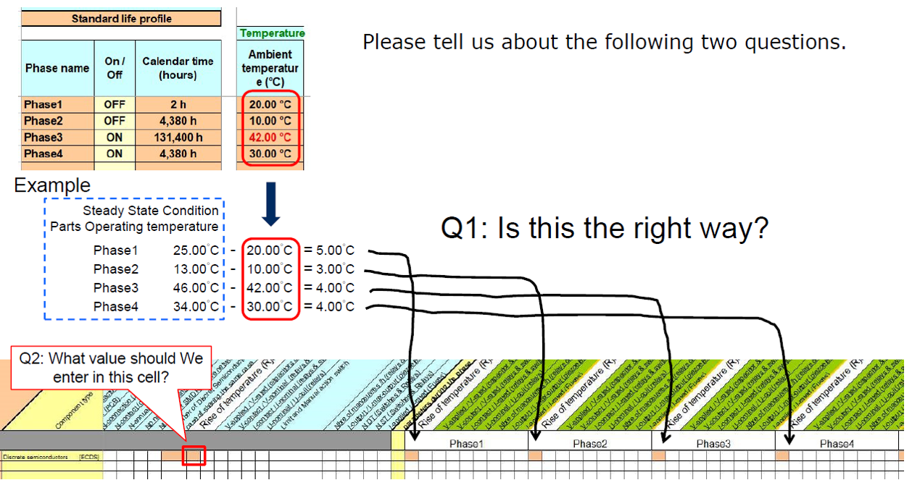

Expertool¶
This section gather the questions related to the use of the Expertool file
Rise of temperature” in the FIDES Expertool ¶
Please tell us about the following two questions.
The proper selection depends on the use case:
#1 Temperature per phase are close one to another (cf previous slide example) no need to go into details per mission profile phase. The dimensioning phase will be the on-station one, and the asssociated temperature is close to the temperature of the other phases. For this use case, put the on-station rise of temperature in the global use cell, and leave the other cells empty.
#2 Temperature per phases are very different: in this case, it might be useful to detail the rise of temperature phase by phase. Once again though, if the highest temperature is reached on the on-station phase, it might not be useful to set the temperature for the others phases (the results won’t be very different with or without the details).
Expertool limitation ¶
Does the FIDES Expertool Excel that we use for the computation comports some limitations we need to be aware of?
Yes, there are indeed limitations for the Expertool model:
Number of misison profile phases : limited to 19
Number of components : limited to 1000. This often implies to use mode than 1 Expertool file to model all the equipment
Temperatures in mission profile : cannot model negative temperatures. A way to bypass it is to use the absolute value in terms of temperature, because it is assumed that the thermal stresses are similar in terms of amplitude.
Expertool on Windows 10 ¶
How to use Expertool on Airbus Windows 10 computer?
In order to be able to launch the Expertool file and perform the calculation, your Expertool folder should be under the C: folder of your computer.